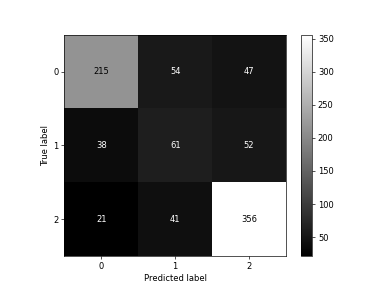

Descripción del dataset
El dataset empleado para el entrenamiento del modelo de clasificación contiene información académica, socioeconómica y demográfica de estudiantes universitarios con el fin de servir como base para modelos predictivos que buscan anticipar la probabilidad de graduación, deserción o permanencia en la institución educativa.
Evaluación del modelo Decision Tree
{{ exactitud }}
Reporte de Clasificación
| Clase | Precisión | Recall | F1-Score | Support |
|---|---|---|---|---|
| {{ clase }} | {{ "%.2f"|format(valores.get("precision", "")) }} | {{ "%.2f"|format(valores.get("recall", "")) }} | {{ "%.2f"|format(valores.get("f1-score", "")) }} | {{ valores.get("support", "")|int }} |
| {{ clase }} | {{ "%.2f"|format(valores) }} | |||
Matriz de Confusión
Predicción: ¿Cuál será el desenlace académico del estudiante?
{% if resultado != 0 %}Resultado de la predicción
Predicción: {{ resultado }}
Probabilidad: {{ proba }} %
{% endif %}